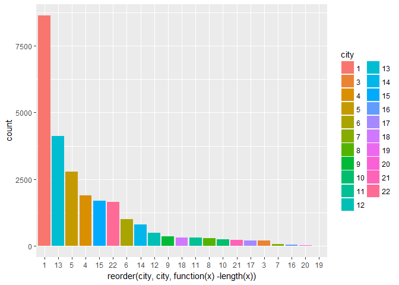
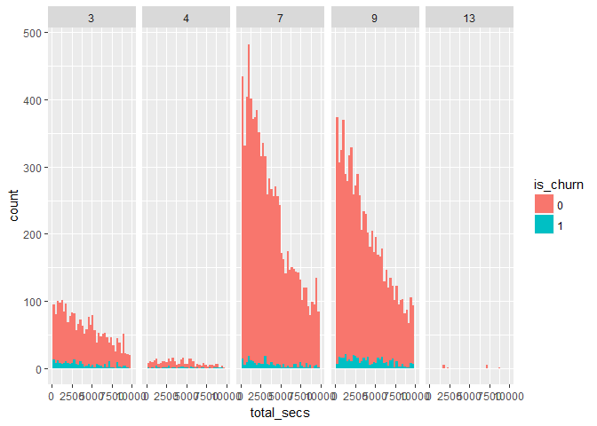
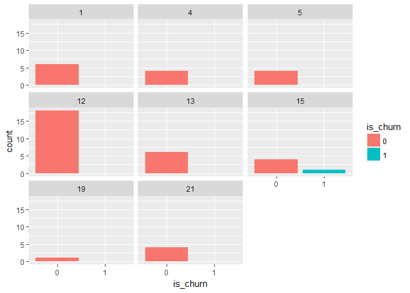
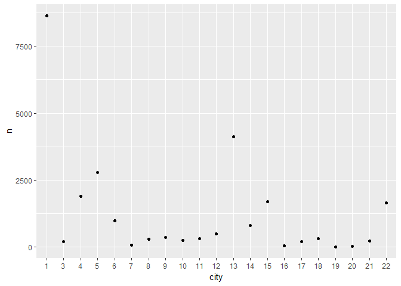

KK Box Basic Analysis
#CONVERT DATA TYPES
df_train$is_churn <- as.factor(df_train$is_churn)
df_train$payment_method_id <- as.factor(df_train$payment_method_id)
df_train$is_auto_renew <- as.factor(df_train$is_auto_renew)
df_train$gender <- as.factor(df_train$gender)
df_train$is_cancel <- as.factor(df_train$is_cancel)
df_train$city <- as.factor(df_train$city)
df_train$registered_via <- as.factor(df_train$registered_via)
#Date times
df_train$transaction_date <- ymd(df_train$transaction_date)
df_train$membership_expire_date <- ymd(df_train$membership_expire_date)
df_train$registration_init_time <- ymd(df_train$registration_init_time)
df_train$date <- ymd(df_train$date)
#REMOVE TARGET VARIABLE
#df_train <- select(df_train, -is_churn)
#str(df_train)
#PLOTS
ggplot(df_train, aes(fill= city, x=reorder(city, city, function(x)-length(x)))) +
geom_bar()

ggplot(df_train, aes(x=total_secs, fill=is_churn))+
geom_histogram(bins=40)+
xlim(0,10000)+
facet_grid(~registered_via, as.table = T, scales='free')
## Warning: Removed 6225 rows containing non-finite values (stat_bin).

#DATA SUMMARIES
df_train %>%
filter(bd > 100 | bd< 0)%>%
ggplot(aes(is_churn, fill=is_churn))+
geom_bar()+
facet_wrap(~city)

df_train %>%
group_by(city)%>%
summarize(avg_age = mean(bd),
n = n())%>%
ggplot(aes(city, n))+
geom_point()

#CREATE RANDOM FOREST
#fit <- randomForest(is_churn ~ .,
# data=subset(df_train, select=c(-msno, -date, -registration_init_time, #-transaction_date, -membership_expire_date)),
#importance=TRUE,
#ntree=10) #nodesize=complexity, sampsize=#rows samples
#varImpPlot(fit)
#Prediction <- predict(fit, test)
#submit <- data.frame(PassengerId = test$PassengerId, Survived = Prediction)
#write.csv(submit, file = "firstforest.csv", row.names = FALSE)
#CREATE LOGISTIC MODEL
#model <- glm(is_churn ~.,family=binomial(link='logit'),data=df_train)
#fitted.results <- predict(model,newdata=subset(test,select=c(2,3,4,5,6,7,8)),type='response')
#fitted.results <- ifelse(fitted.results > 0.5,1,0)